Canteen module walk-through, 29 Oct 2026 (23 of 23 steps passed, 0 errors)
01-admin-modules.png: Admin, Settings, Modules: the Canteen module switched on (customer accounts come with it)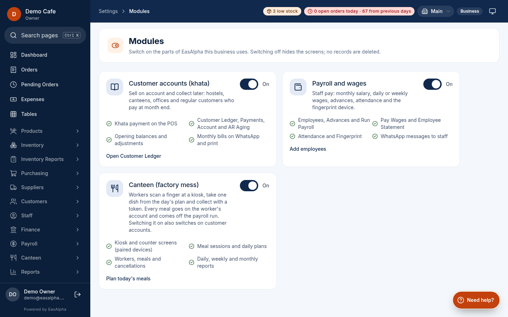
02-admin-sessions.png: Admin, Canteen, Meal Sessions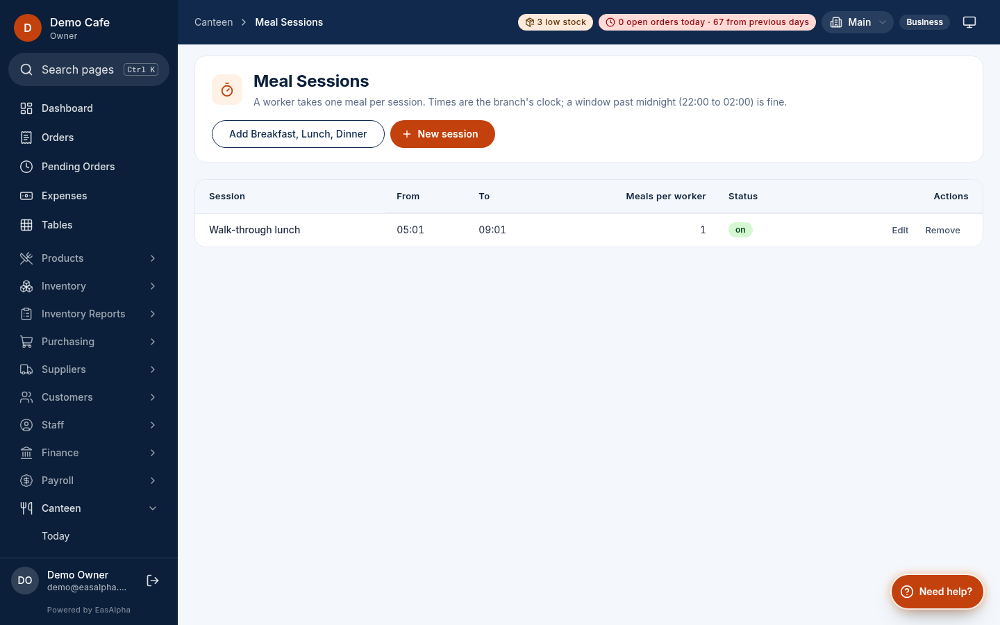
03-admin-plans.png: Admin, Canteen, Meal Plans: three dishes, cooked quantity, worker price, published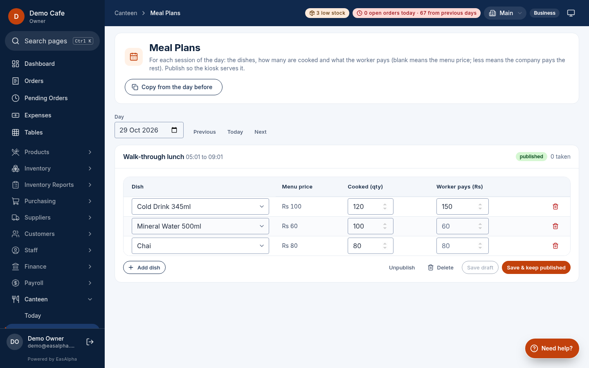
04-admin-workers.png: Admin, Canteen, Workers: fingerprint enrolment and accounts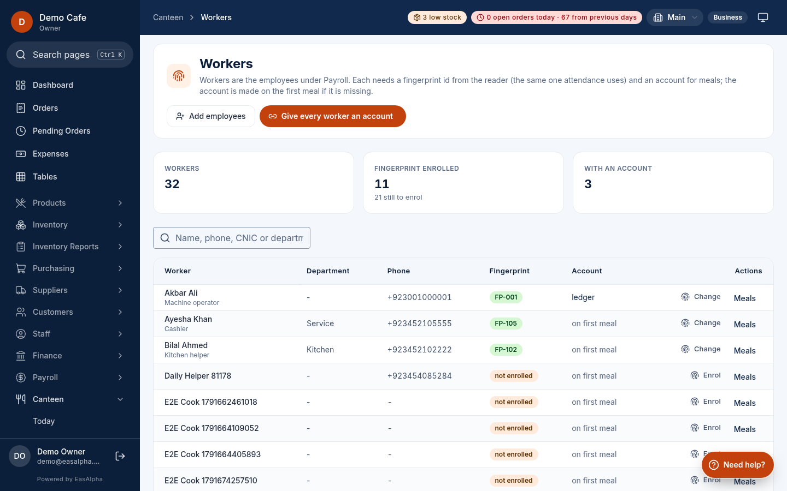
05-admin-today-before.png: Admin, Canteen, Today before any meal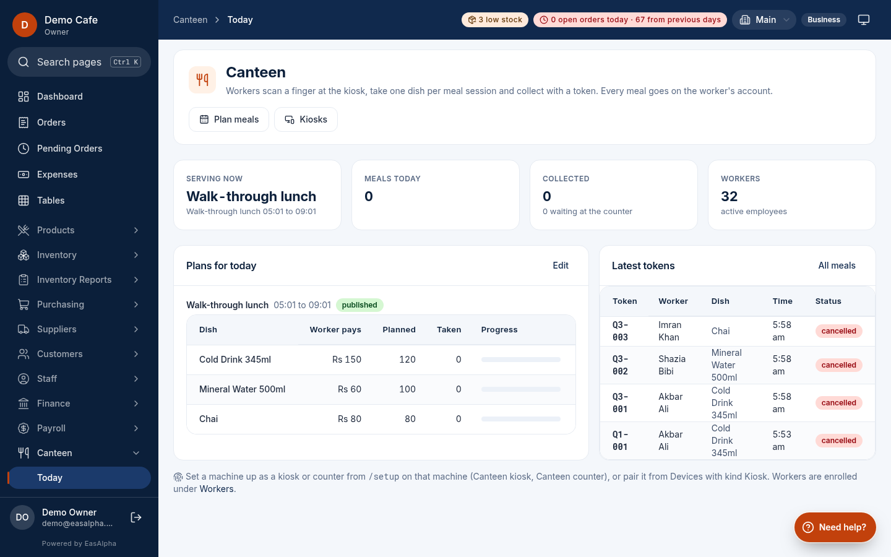
06-kiosk-idle.png: Kiosk: waiting for a finger, the session's dishes
07-kiosk-choose-dish.png: Kiosk: finger read (Akbar Ali), asks for the dish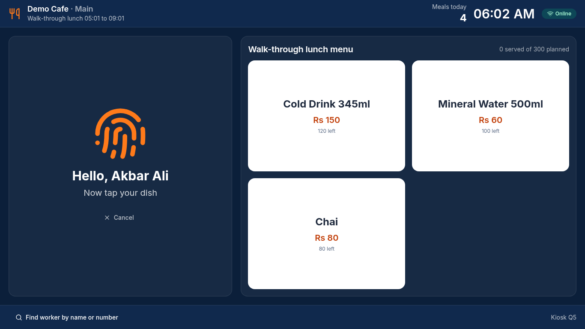
08-kiosk-token.png: Kiosk: token issued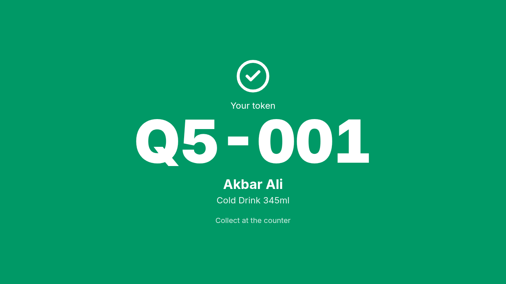
09-kiosk-already-taken.png: Kiosk: the same finger again, refused with the earlier token and time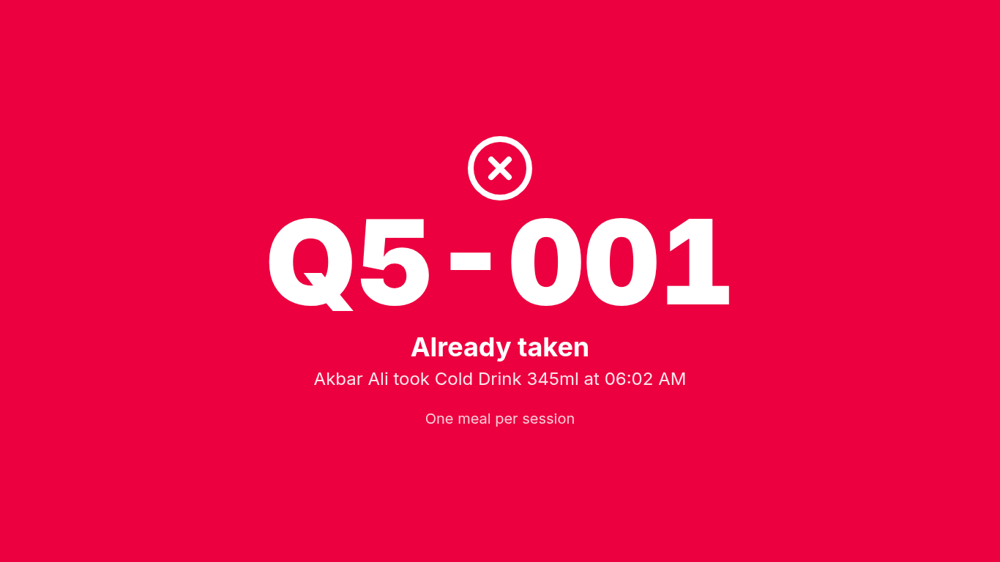
10-kiosk-offline-token.png: Kiosk offline: meal saved locally with a token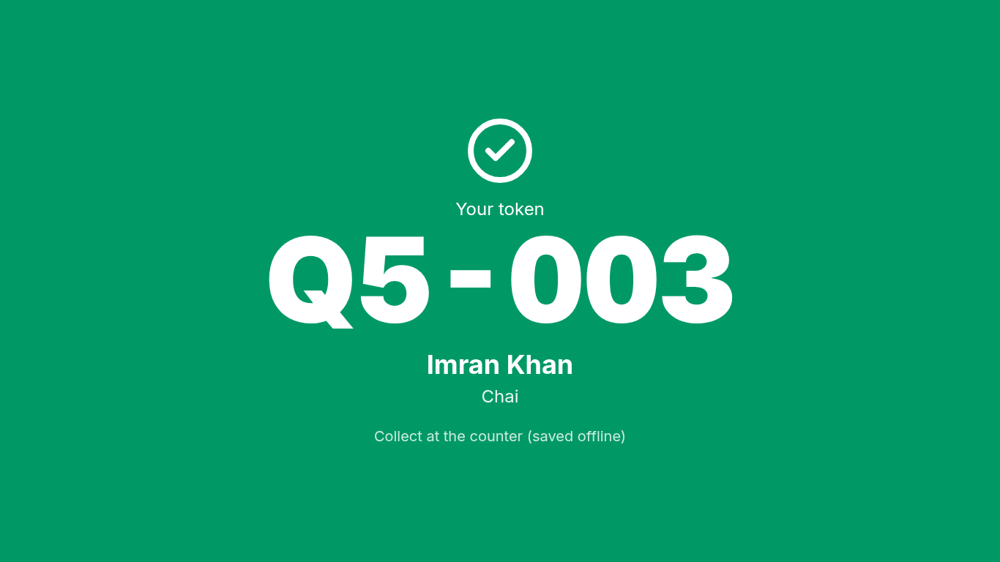
11-kiosk-back-online.png: Kiosk back online: the offline meal reached the server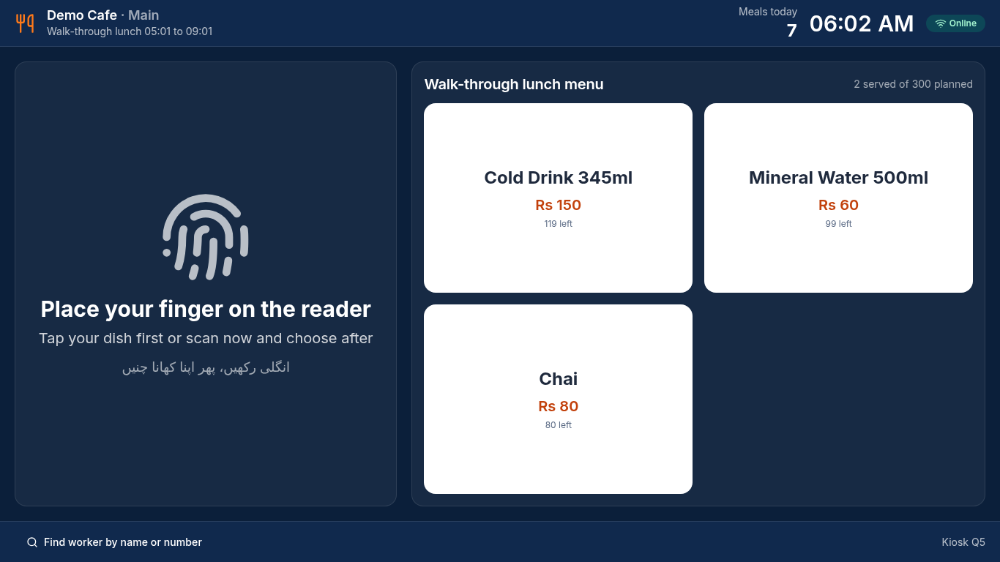
12-counter-waiting.png: Counter: tokens waiting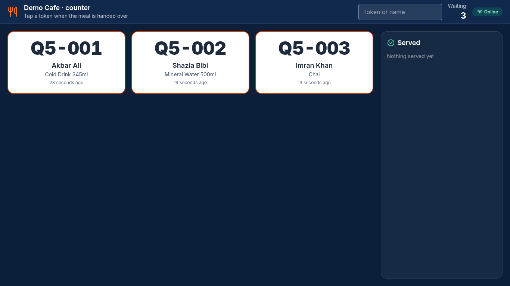
13-counter-served-one.png: Counter: first token served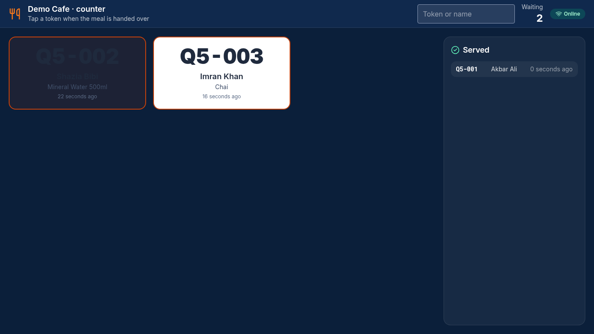
14-admin-today-after.png: Admin, Canteen, Today after the meals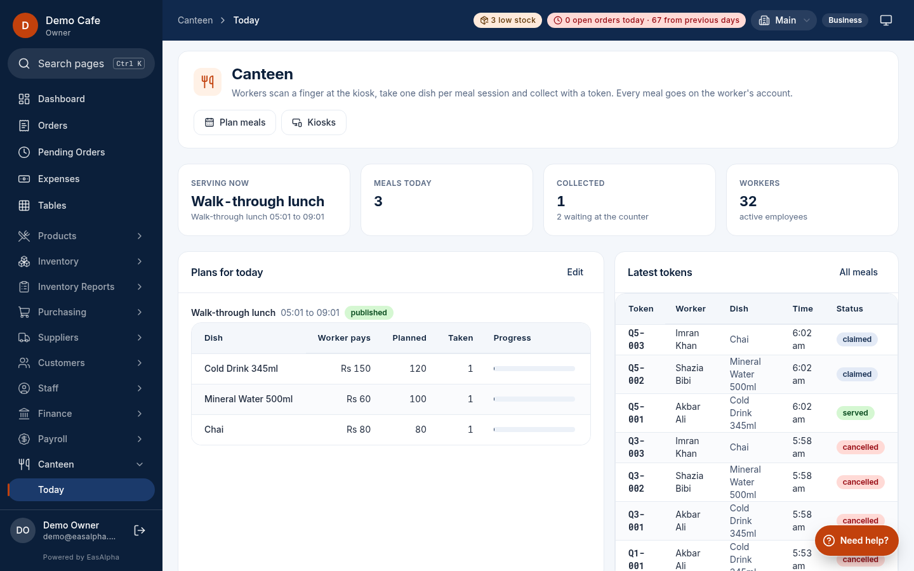
15-admin-meals.png: Admin, Canteen, Meals: every token of the day
16-admin-reports-by-day.png: Admin, Canteen, Reports by day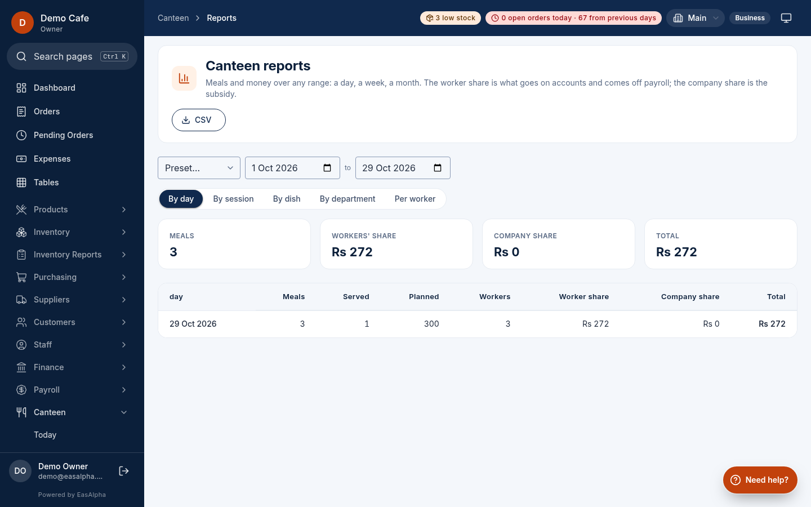
17-admin-reports-by-dish.png: Reports by dish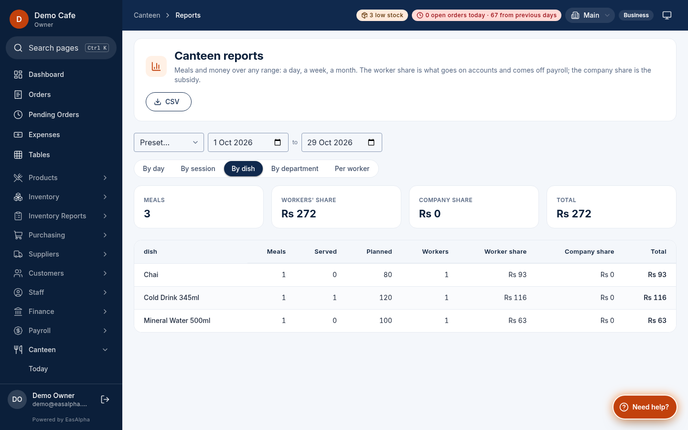
18-admin-reports-workers.png: Reports per worker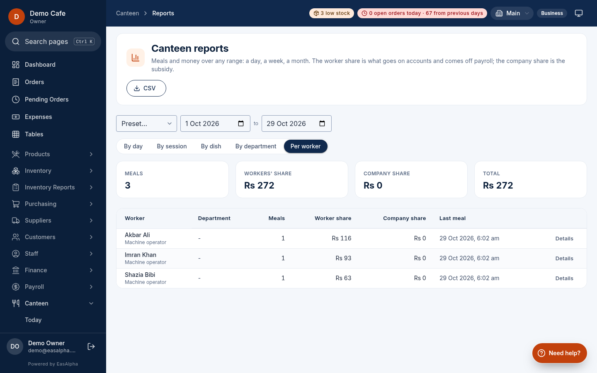
19-admin-meals-after-cancel.png: Meals after a manager cancelled one with a reason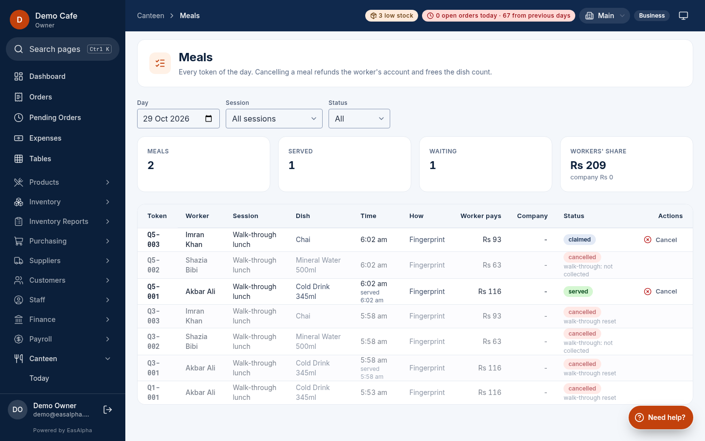